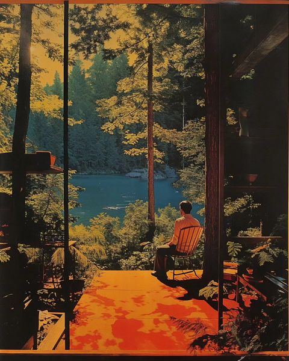

week 4 of 2024

Will Toulan creates these interesting AI generated artworks that fascinate me with their surreal nostalgic vibe. This captures my mindspace this past week.
It was a random and disconnected week for me. My attention has been on deeper surreal connections that feel more abstract and unrelated. I think I’ve enjoyed the randomness although I kept fighting the urge to force things into a more focused and productive mindset. Seems like I felt the need to have something tangible to show for these subconscious dives. Thankfully, I remembered that it is all about the journey and not the destination. I don’t need to do anything but enjoy the adventure for what it is even if it is all in my head and I don’t have anything to show for it. Deep work is being done even if it doesn’t feel like it.
I think the finds I have this week reflect my disconnected mindset and my own attempts at finding meaning.
Working on a project of any kind is a journey. And like any type of journey, what matters the most is not the destination, but the journey itself. It’s easy for me to forget that crucial aspect while I’m working through any type of project. I jump from one project to the next, with my eyes set on the finish line but I forget to pay attention to the process. And in doing that I often find myself to be quite miserable. Because there’s no joy to be found at the finish line. The enjoyable part is the process. Trying new things, failing, making mistakes, experimenting, getting hurt. It’s all part of the process and it’s what makes the journey enjoyable.
disconnection and ambiguity
Apophenia is the tendency to perceive meaningful connections between unrelated things. It is the ability to connect dots that others do not see. Originally meant as an indicator of early stages of schizophrenia or other psychiatric dysfunction. I believe it can also be a sign of intelligence and creativity as shown through pattern recognition and a sense of synchronicity.
…creativity is the opposite of certainty. When you’re creating, you’re making something that hasn’t been done before, and to do that, there isn’t a set path with clear yeses and noes. You have to be willing to step into the unknown if you want to be creative.
This is an idea that has resonated with me for years, especially as design teacher. Students are so used to being told what to do that they struggle mightily when the job is to create their own path. There’s a ton of fear in the unknown and it takes bravery to willingly take that step.
My (unfinished) masters thesis was all about dealing with uncertainty and helping students work through that challenge. I have tons of notes, thoughts, links related to uncertainty and yet there’s not much on my website yet. Rediscovering the idea this week has renewed my interest in organizing those thoughts.
functionality of design
Minimalist design can be expressed in many forms. It can be almost anything we use. The difference between art and design is simple: design needs to work — art does not.
slow vs fast
Contrast the idea of Slow Design and the idea of taking time to test, iterate, explore and refine coupled with patience and mindful craftsmanship with the need to Design For Speed where users expect everything to work quickly and accurately without fail. Designers need to take their time creating things/tools/experiences that can be used quickly and without thought. The two concepts are intertwined.
Slow design is about embracing the time-consuming process of trial and error so we can figure out the most elegant, considered, and sustainable solution…Design is not just about the end product. It’s the journey that design has taken to be visualised, prototyped, iterated upon, tested, fine-tuned, and realised.
People expect a response in a certain amount of time, otherwise things get weird. The same can be said with peoples’ expectations of software. When they click a link, they expect the page to load within a certain amount of time. When they tap a button, they expect an immediate response. Otherwise things get weird.
— PJ Onori
generative.fm is a site with ambient music generators that are truly random and don’t repeat. There are a ton of recipes on the site with categories like calm, drone, and electronic. I’m currently listening to Skyline. Added this link to my ambient sounds page.